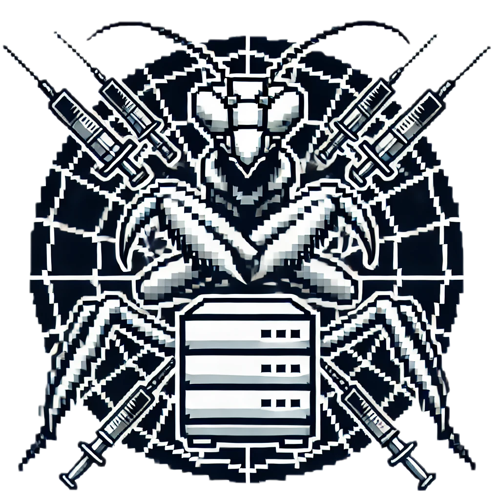

Status:
- Head of AI at Cracken; passive security skeptic seeking trust-minimized, assumption-light, non-heuristic security & privacy (but, in reality, I spend most of my time either breaking ML models or building ML models to break stuff).
-
Working on:
- LLMs & Agentic stuff Security (yes, I know...)
- Machine Learning Privacy
- Password Security ❤️
Preprints:
- Dario Pasquini, Michal Bazyli, Taras Fedynyshyn, Artem Sorokin
Red-Teaming the Agentic Red-Team
Blogposts:
-
Dario Pasquini: Anatomy of Apple's Personal Knowledge Graph
- Dario Pasquini, Michal Bazyli: Weaponizing Personalization: From Knowledge Graph to Extortion
- Dario Pasquini: Lying Your Way Out of the (Claude Code) Sandbox
-
Dario Pasquini, Petros Efstathopoulos: Indirect Prompt Injection and Filter Bypass on Apple Intelligence
Media coverage: The Register, Fox News
Works I like to talk about:
- [USENIX Sec'26] -- Dario Pasquini, Evgenios M. Kornaropoulos, Giuseppe Ateniese, Omer Akgul, Athanasios Theocharis, Petros Efstathopoulos.
When AIOps Become "AI Oops": Subverting LLM-driven IT Operations via Telemetry Manipulation
Media coverage: The Register, Schneier on Security - [ACM AISec'26] -- Dario Pasquini, Evgenios M. Kornaropoulos, Giuseppe Ateniese.
Hacking Back the AI-Hacker: Prompt Injection as a Defense Against LLM-driven Cyberattacks
Media coverage: Dark Reading, Schneier on Security - [USENIX Sec'25] -- Dario Pasquini, Evgenios M. Kornaropoulos, Giuseppe Ateniese.
LLMmap: Fingerprinting for Large Language Models - [ACM AISec'24] -- Dario Pasquini, Martin Strohmeier, Carmela Troncoso.
Neural Exec: Learning (and Learning from) Execution Triggers for Prompt Injection Attacks -
[IEEE S&P'24] -- Dario Pasquini, Danilo Francati, Giuseppe Ateniese, Evgenios M. Kornaropoulos.
Breach Extraction Attacks: Exposing and Addressing the Leakage in Second Generation Compromised Credential Checking Services - [IEEE S&P'24] -- Dario Pasquini, Giuseppe Ateniese, Carmela Troncoso.
Universal Neural-Cracking-Machines: Self-Configurable Password Models from Auxiliary Data - [IEEE S&P'23] -- Dario Pasquini, Mathilde Raynal, Carmela Troncoso.
On the (In)security of Peer-to-Peer Decentralized Machine Learning - [ACM CCS'22] -- Dario Pasquini, Danilo Francati, Giuseppe Ateniese.
Eluding Secure Aggregation in Federated Learning via Model Inconsistency -
[ACM CCS'21] -- Dario Pasquini, Giuseppe Ateniese, Massimo Bernaschi.
Unleashing the Tiger: Inference Attacks on Split Learning -
[USENIX Sec'21] -- Dario Pasquini, Marco Cianfriglia, Giuseppe Ateniese, Massimo Bernaschi.
Reducing Bias in Modeling Real-world Password Strength via Deep Learning and Dynamic Dictionaries -
[IEEE S&P'21] -- Dario Pasquini, Ankit Gangwal, Giuseppe Ateniese, Massimo Bernaschi, Mauro Conti.
Improving Password Guessing via Representation Learning
Invited talks (the ones I remembered to put here):
- "Say Shibboleth: Fingerprinting the model behind the attack" (w/ Sergej Epp) [unprompted II (2026)]
- "Red-Teaming the AI-Red-Team" [ELSA General Assembly workshop 🎥]
- "Hacking-back the AI-Hacker (Mantis)" [RSAC conference 🎥]
- "Neural Exec: Learning Execution Triggers for Prompt Injection Attacks" [Swiss AI Sec. Network, Sapienza University]
- "Privacy Preserving Collaborative Machine Learning?" [CNR Italy, Inria Rennes, Monash University, Roma3 University, JPMorgan AlgoCRYPT Center of Excellence]
- "Password Alchemy with Universal Neural-Cracking-Machines: Transmuting email addresses into Password Models" [PasswordsCon'23, Roma3 University]
LLM sec projects:
- Project Blacksea: host-based deception that gets you arbitrary code execution on LLM-attackers
-

Project Mantis: Defending against LLM-driven cyberattacks using prompt injection - LLMmap: like nmap but for LLMs...
Program Committees:
- IEEE S&P 2026
- ACM CCS 2023/2025/2026
- USENIX Sec 2023/2025
- USENIX SAIS 2027
- IEEE SaTML 2024/2025/2026
- PETS 2025
- Workshops: [CRYPTO] PPML 2024, [NeurIPS] InfPriv 2026